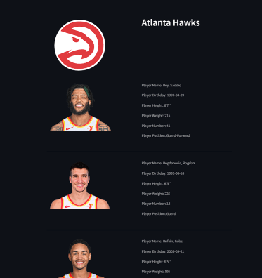
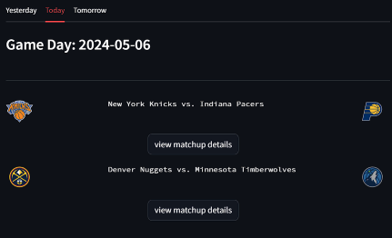
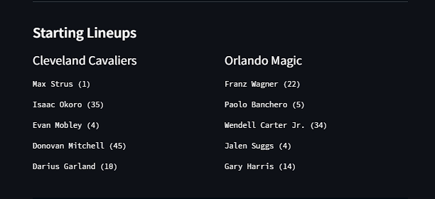
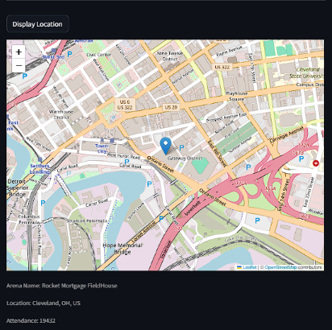
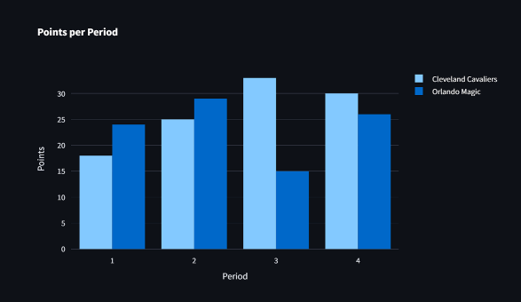

Goals

Team details and roster
Our main goal going into this was effectiveness. We wanted to make sure a user could see the statistics perfectly for each player and we wanted to make sure the API we were using to transfer these statistics was reliable and had all accurate NBA statistics. After comparing official NBA websites with analytics, we were able to ensure complete effectiveness in our web app. It is important to note how we also placed emphasis on the speed in which the user can look and filter through players. By implementing little things such as an autofill search and “active/all-time” filters, we want to make sure the user accesses this information in a fast manner.
Another main usability goal we established was efficiency. We know there are multiple NBA statistic pages such as Basketball Reference, but we know that pages like the one mentioned might not be as efficient as ours. Our web app was able to use streamlit to condense everything and make it streamlined for the average user. If someone goes to Basketball Reference, they are greeted by an immense amount of information which can actually deter a user from accessing the information provided by the site. We wanted to make sure that data will show up with what the user would like to see. There is no extraneous data which distracts the user from what they are there for in the first place.
Designing

matchup list
The design process as a whole for this web app came very fluid for the most part. As most of us are pretty knowledgeable with the essentials of basketball, we had a lot in common and we took it to the design board. We started off with a simple drop down select box where all basketball players who have ever played in the NBA would show up. While this was nowhere near what we ended up doing, it was important to get a heads-up look at what the Streamlit framework and NBA statistics would look like. The statistics as a whole did not take as long as we thought and the stadium and game information came as a great plus. The design was simple especially with utilizing the basic essentials of streamlit. From select boxes to radios, we had a great time implementing what we were familiar with in our Human Computer Interaction Course. This made the whole design process only have minimal setbacks.
Implementation

starting line ups for a specifc game
The API integration process as a whole for this web app was nothing short of simple. While the idea of finding the right API is simple, actually putting it into motion was a different story. Firstly, it was important to look through various API’s and see which one had the best free plan with the best ratio of requests per minute. Luckily after just a while, we came across the perfect one. Aside from this minor setback, we were able to get the ball rolling and everything else came naturally.
As mentioned previously, the interactive widgets we used such as radios and select boxes were crucial for the usability goals talked about earlier. The efficiency aspect of our web app was something we always wanted to prioritize as we know other websites simply don’t place this concept as important as us. These interactive widgets help make all the information we present become concise and just what the user would like to see. The radio was important to determine whether the user would like to see all time or active NBA players. This was a massive upgrade to just listing out all players who have played in the league which could have simply been too much on the user.
User Testing

arena location on a map
we received some praise but slight constructive criticism from one of our users who claimed they wanted a way in which the whole web app was not just a single page and could extend through more Streamlit pages. This led our group into the dark ages of sorts in terms of starting back from scratch to see where we could implement different pages. Streamlit functions in a way where most of the web application is seen on one long page. However, our users would get tired of scrolling up and down for extended periods of time. We took this problem head on and were able to get through some workarounds which were able to improve our web app.

graph of points made in a match for each team per quarter